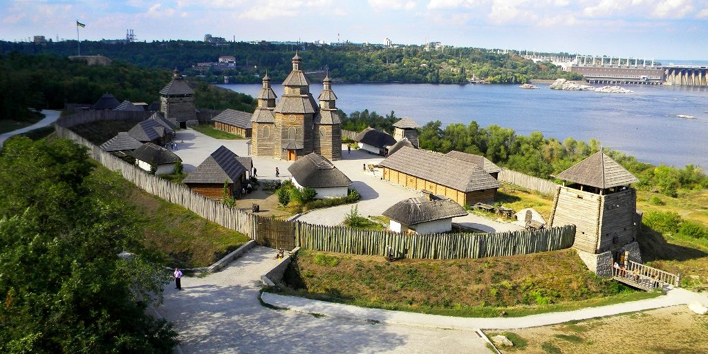
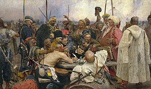
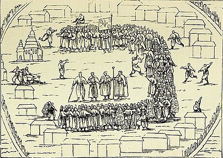
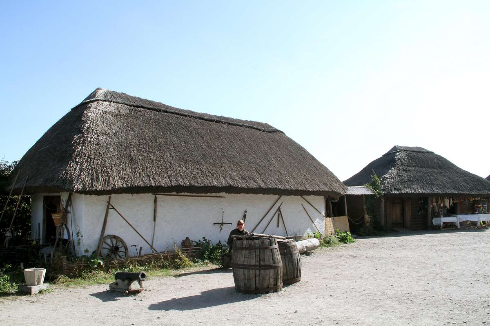
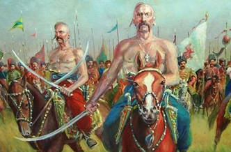
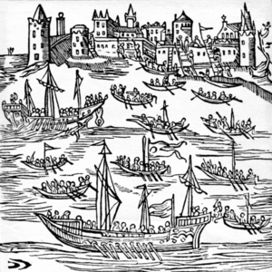

Історія фортеці
Запоро́зька Сі́ч або Запорі́зька Сі́ч — укріплений осередок нереєстрового Війська Запорозького Низового другої половини XVI — кінця XVIII століття, що був розташований за порогами Дніпра. Збереглися відомості про вісім Запорозьких Січей, які наслідували одна одну. Першим відомим кошовим отаманом Війська Запорізького був Остафій Дашкевич (поч. XVI ст.). Герб Війська Запорозького з літопису Григорія Грабянки, що присвятив йому пісню (староукр.) «Войська Запорозького воїн знаменитий» У сучасності термін Запорозька Січ також іноді вживається для позначення усієї території та устрою Війська Запорозького. Виникнення Першою літописною Січчю є Томаківська — саме про цей острів, на якому на той час ще розміщувався лише уход, писав Марцін Бельський: здавна на ньому низові козаки мешкають, яко ж їм стоїть за найміцніший замок. Достовірний опис Томаківки вже з укріпленням та козацькою радою початку 80-х років XVI ст. подав Бартош Папроцький, котрий розповів про поїздку на Запорожжя польського шляхтича Самуеля (Самійла) Зборовського. Першої половини 80-х, стосуються й перші згадки про дерев'яні січові укріплення — засіки, що їх будували козаки. Секретар папського нунція в Польщі Карло Гамберіні 1584 р. сповіщав: «Дерева там багато і вони (козаки) так уміють боронити себе засіками що й зимою, як Дніпро змерзне, не бояться ніякого ворога, для більшої певності вирубають навколо лід»
Видатні постаті
- Богдан Хмельницький — гетьман, очільник визвольної війни проти Речі Посполитої, засновник козацької держави.
- Іван Сірко — легендарний кошовий отаман, учасник численних походів проти Кримського ханства та Османської імперії.
- Петро Сагайдачний — гетьман, відомий успішними морськими та сухопутними походами, а також реформами в армії.
- Дмитро Вишневецький (Байда) — засновник Запорозької Січі, організатор козацького війська.
- Максим Кривоніс — полководець, що брав участь у битвах визвольної війни під керівництвом Хмельницького.
- Семен Палій — відомий полковник, що вів боротьбу проти польської шляхти на Правобережжі.
Устрій
Запорозька Січ, заснована як козацька республіка, була укріпленим поселенням, оточеним валами і палісадами. На її території розташовувалися курені (казарми), церква, будинки старшини та різні господарські споруди. Основним органом влади була військова козацька рада, яка обирала кошового отамана і старшину. Соціальна структура Січі складалася з багатих власників рибних промислів і дрібних землевласників, а також бідноти — голоти.
Січ не знала феодальної власності на землю; тут панував принцип найму. Козаки мали певні права, але багатші верстви здебільшого впливали на рішення ради. На Січі також діяли школи для дітей козаків, а суспільно-політичне життя зосереджувалося навколо церкви. Козаки вели активну торгівлю на Січовому базарі, продаючи продукти своєї праці. Військовий суд суворо карав за злочини, а серед козаків шанувалася культура та книжки.
Курі́нь — легка будівля, часто тимчасова, призначена для ночівлі, зимівлі і т. д. Інші назви куреня — буда, катра́га, катря́га (переважно на пасіці), заст. сала́ш. Колись курені мали дуже різні розміри — від невеликої будівлі, складеної з гілок дерева з листям, чи з жердин і вкритої соломою, сторожки (на городах, баштанах і таке інше) до міцної великої хати з товстих дубових брусів на кілька сот осіб. Слово курінь має тюркське походження: пор. чаг. kürän («загін воїнів»), уйг. kürijän («обоз»). Згідно з турецько-татарськими словниками, курінь — «натовп», «плем'я», «загін», «корпус», «полк». В імперії Чингісхана куренем називалась найменша одиниця громадського і військового управління; курені підкорялись агам, зайсангам, шулепгам і утворювали окремі військові частини (підрозділи), складені за родовою ознакою. Сумнівним слід визнати етимологічний зв'язок слова з прасл. *kuriti («курити», «випускати дим»). Застаріле салаш (шалаш) походить через угор. szállás («нічліг, житло, бівуак») від тур. salaş («намет»)
Сухопутні і морські походи Запорозької Січі
Запорозька Січ здійснювала сухопутні і морські походи на поляків, османів і татар, московитів. У сухопутних походах, які здійснювали в основному навесні, переважала кіннота. Для морських походів обирали головно осінній час і здійснювали їх на морських суднах — чайках, що вміщували від 50 до 70 козаків. Крім чайок інколи використовували й більші кораблі. Попереду йшло судно Кошового отамана, на якому майорів отаманський стяг. Кожен козак був добре озброєний: шабля, дві рушниці, шість фунтів пороху, достатня кількість куль, ядра для фальконетів, один нюрнберзький квадрант (для орієнтування).
Морські походи
Морські походи Сагайдачного — це серія військових кампаній Війська Запорізького проти Османської Імперії та Кримського ханства, що відбулися в період з початку XVII століття. Головною метою походів було звільнення полонених, яких продавали в рабство. Основні події: 1616 рік: Під проводом гетьмана Петра Сагайдачного запорожці на «чайках» знищили османський флот і захопили Кафу, найбільший ринок рабів. 1602 рік: Успішний похід до Кілії, де козаки розгромили османський флот. 1606 рік: Штурм фортець Кілію та Білгород, захоплення 10 османських галер. 1607 рік: Розгром османської флотилії під Очаковом. 1614 рік: Козаки захопили Трапезунд та обложили Сіноп, знищивши османський флот. 1615 рік: Похід до Стамбулу, спалення околиць та бій з османською ескадрою. 1616 рік: Знову під проводом Сагайдачного, козаки знищили османський флот у гирлі Дніпра, захопили галери та звільнили десятки тисяч полонених у Кафі. 1617 рік: Напад на Стамбул, знищення османської ескадри та вбивство адмірала. 1625 рік: Черговий похід, що завершився спаленням 250 міст та містечок навколо Трабзону.